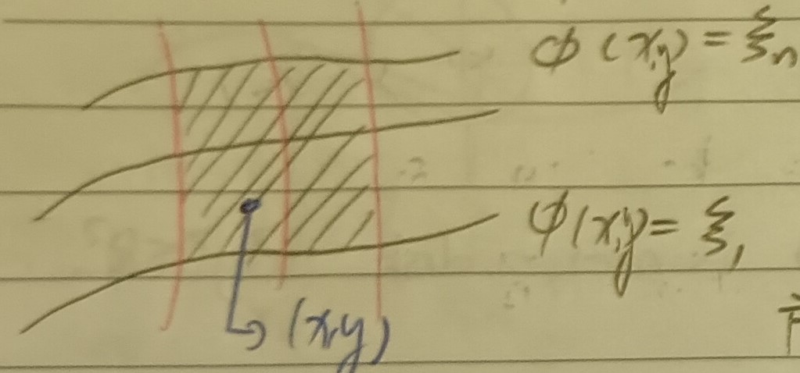
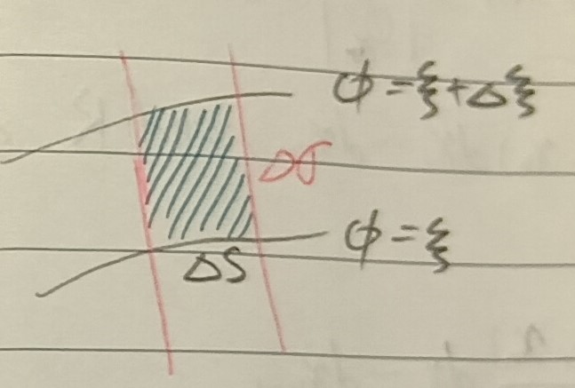
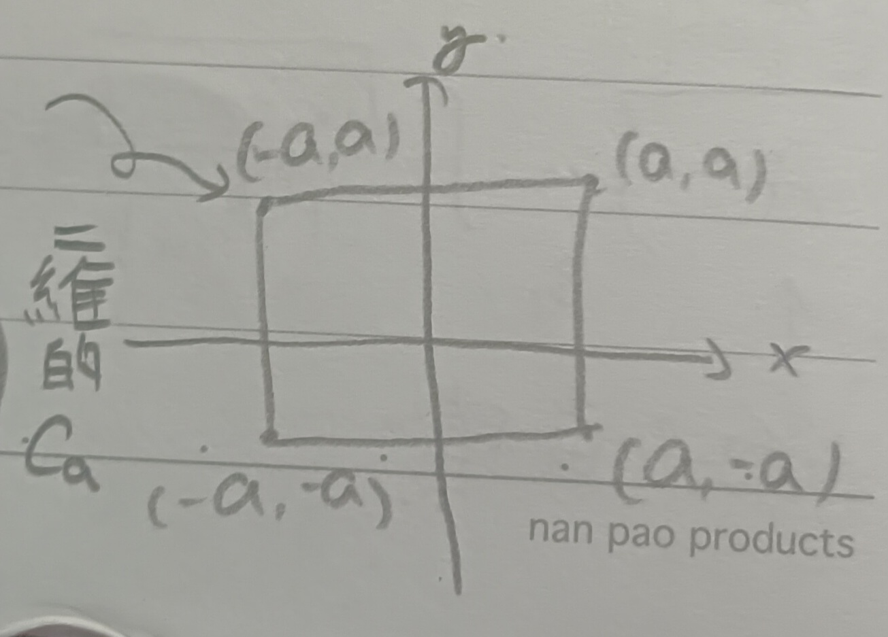

這份筆記是關於面積分的定義與性質，以及其高維類比與計算範例。
面積分
考慮積分\(\iint_R f(x,y)dxdy\)，其中\(R\)是由一族曲線所覆蓋的一個域，而這些曲線可以用\(\phi(x,y)=\xi\)來表達(見下圖1)。
我們可以從此建構新座標系\((\xi,\eta)\)，其中\(\eta=y\)。於是 \[
\iint f(x,y)dxdy=\iint\frac{f(x,y)}{|\phi_x|}d\xi d\eta=\int
d\xi\int_{C_\xi}\frac{f(x,y)}{|\phi_x|}d\eta
\] 其中\(C_\xi\)代表曲線\(\phi(x,y)=\xi\)。而上市中的\(|\phi_x|\)是雅可比行列式，因為 \[
\frac{\partial(\xi,\eta)}{\partial(x,y)}=\left|
\begin{array}{cc}
\phi_x & \phi_y\\
0 & 1
\end{array}
\right|=\phi_x
\] 於是從\((\xi,\eta)\)轉去\((x,y)\)就要乘以\(1/|\phi_x|\)。
接著，若我們固定\(\xi\)，則 \[
\int_{C_\xi}\frac{f(x,y)}{|\phi_x|}d\eta=\int_{C_\xi}\frac{f(x,y)}{|\phi_x|}\times\frac{\sqrt{\phi_x^2+\phi_y^2}}{\sqrt{\phi_x^2+\phi_y^2}}d\eta
\] 參照這裡的定義3與註記3-1，令
\[
s=\int_\alpha^\beta\sqrt{\dot{x}^2+\dot{y}^2}dt
\] 則(假定\(\dot{y}>0\))
\[
\begin{aligned}
\frac{ds}{d\eta}&=\frac{ds}{dt}\cdot\frac{dt}{dy}\\
&=\frac{\sqrt{\dot{x}^2+\dot{y}^2}}{\dot{y}}\\
&=\sqrt{1+\left(\frac{\dot{x}}{\dot{y}}\right)^2}\\
&=\sqrt{1+\left(\frac{-\phi_y}{\phi_x}\right)^2}\mbox{
(隱函數定理)}\\
&=\frac{\sqrt{\phi_x^2+\phi_y^2}}{|\phi_x|}
\end{aligned}
\] 於是，有 \[
\int_{C_\xi}\frac{f(x,y)}{|\phi_x|}d\eta=\int_{C_\xi}\frac{f(x,y)}{\sqrt{\phi_x^2+\phi_y^2}}ds
\] 也就是說：
定理 1：面積分 (Surface Integral)
\[ \iint_R f(x,y)dxdy=\int d\xi\int_{C_\xi}\frac{f(x,y)}{\sqrt{\phi_x^2+\phi_y^2}}ds \]
上式也可以如下解釋：今假設有兩族正交的曲線(即相交處都垂直)，並將另一族曲線的弧長記為\(\sigma\)(見下圖2)。
則因為曲線互相垂直，故類似上面有 \[ \begin{aligned} \frac{dx}{d\sigma}&=-\frac{dy}{ds}=\frac{-\phi_x}{\sqrt{\phi_x^2+\phi_y^2}}\\ \frac{dy}{d\sigma}&=\frac{dx}{ds}=\frac{-\phi_y}{\sqrt{\phi_x^2+\phi_y^2}} \end{aligned} \] (我們可以調整\(s\)和\(\sigma\)的方向讓上式是對的)，則因為 \[ \begin{aligned} \frac{d\xi}{d\sigma}&=\phi_x\frac{dx}{d\sigma}+\phi_y\frac{dy}{d\sigma}\\ &=-\sqrt{\phi_x^2+\phi_y^2} \end{aligned} \] 則因為 \[ \frac{d\sigma}{d\xi}=\frac{-1}{\sqrt{\phi_x^2+\phi_y^2}},|\Delta\sigma|\approx\left|\frac{d\sigma}{d\xi}\Delta\xi\right| \] 故 \[ \mbox{圖2斜線面積}\approx|\Delta s\Delta\sigma|\approx\left|\frac{\Delta s\Delta\xi}{\sqrt{\phi_x^2+\phi_y^2}}\right| \]
三重積分
在\(\mathbb{R}^3\)中，考慮\(\iiint_R f(x,y,z)dxdydz\)。假設\(R\)可以被一族曲面\(S_\xi:\phi(x,y,z)=\xi\)覆蓋，則 \[ \begin{aligned} \iiint f(x,y,z)dxdydz&=\int d\xi\iint_{S_\xi}\frac{f(x,y,z)}{|\phi_x|}dydz\\ &=\int d\xi\iint_{S_\xi}\frac{f(x,y,z)}{\sqrt{\phi_x^2+\phi_y^2+\phi_z^2}}\cdot\frac{\sqrt{\phi_x^2+\phi_y^2+\phi_z^2}}{|\phi_x|}dydz \end{aligned} \] 我們令 \[ d\sigma=\frac{\sqrt{\phi_x^2+\phi_y^2+\phi_z^2}}{|\phi_x|}dydz \] 是一小塊面積(類似\(ds\)，用小塊切平面逼近曲面\(S_\xi\))，則有
定理 2
\[ \iiint_R f(x,y,z)dxdydz=\int d\xi\iint_{S_\xi}\frac{f(x,y,z)}{\sqrt{\phi_x^2+\phi_y^2+\phi_z^2}}d\sigma \]
多重積分
一般來說，在\(\mathbb{R}^n\)中，考慮積分 \[ \iint\cdots\int f(x_1,x_2,\cdots,x_n)dx_1dx_2\cdots dx_n \]
定義 3：n-1維曲面 ((n-1)-dimensional Surface)
在\(\mathbb{R}^n\)中，我們將\(n-1\)維曲面定義為 \[ \phi(x_1,x_2,\cdots,x_n)=const. \]
假設\(\frac{\partial\phi}{\partial x_n}\neq 0\)(於是可以用隱函數定理)。
定義 4：n-1維測度 ((n-1)-dimensional Measure)
給定一\(n-1\)維曲面\(S\)，我們將\(S\)在\(\mathbb{R}^n\)中的側度定為 \[ A=\iint\cdots\int_S\frac{\sqrt{\phi_{x_1}^2+\cdots+\phi_{x_n}^2}}{|\phi_{x_n}|^2}dx_1dx_2\cdots dx_{n-1} \]
於是，有 \[ \int\cdots\int_S f(x_1,\cdots,x_n)d\sigma=\int\cdots\int_S f(x_1,\cdots,x_n)\frac{\sqrt{\phi_{x_1}^2+\cdots+\phi_{x_n}^2}}{|\phi_{x_n}|}dx_1dx_2\cdots dx_{n-1} \] 今給定\(R\subset\mathbb{R}^n\)，並考慮積分 \[ \int\cdots\int f(x_1,\cdots,x_n)dx_1\cdots dx_n \] 並假設\(R\)能被一族曲面\(S_\xi:\phi(x_1,\cdots,x_n)=\xi\)覆蓋，則：
定理 5
\[ \begin{aligned} \int\cdots\int_R f(x_1,\cdots,x_n)dx_1\cdots dx_n&=\int d\xi\int\cdots\int_{S_\xi}\frac{f(x_1,\cdots,x_n)}{|\phi_{x_n}|}dx_1\cdots dx_{n-1}\\ &=\int d\xi\int\cdots\int_{S_\xi}\frac{f(x_1,\cdots,x_n)}{\sqrt{\phi_{x_1}^2+\cdots+\phi_{x_n}^2}}d\sigma \end{aligned} \] 其中\(d\sigma=\frac{\sqrt{\phi_{x_1}^2+\cdots+\phi_{x_n}^2}}{|\phi_{x_n}|}dx_1dx_2\cdots dx_{n-1}\)。
高維球的體積與表面積
定義 6：球殼 (Sphere)
一個\(\mathbb{R}^n\)中的球殼是 \[ x_1^2+x_2^2+\cdots+x_n^2=R^2 \]
定義 7：球 (Ball)
一個\(\mathbb{R}^n\)中的球是 \[ x_1^2+x_2^2+\cdots+x_n^2\leq R^2 \]
定義 8：徑向函數 (Radial Function)
我們說一\(\mathbb{R}^n\)上的函數\(f(x_1,x_2,\cdots,x_n)\)是徑向的，若 \[
f(x_1,x_2,\cdots,x_n)=f(r)\mbox{ ,where
}r=\sqrt{x_1^2+x_2^2+\cdots+x_n^2}
\] 意即函數值只和\((x_1,x_2,\cdots,x_n)\)到原點的距離有關。
今給定一半徑為\(r\)的球殼，由 \[ \phi(x_1,x_2,\cdots,x_n)=\sqrt{x_1^2+x_2^2+\cdots+x_n^2}=r \] 給出。又給定一定義在\(\tilde{R}\subset{R}^n\)上的徑向函數\(f(x_1,x_2,\cdots,x_n)\)，其中 \[ \tilde{R}=\{(x_1,x_2,\cdots,x_n):x_1^2+\cdots+x_n^2\leq R^2\} \] 則：
引理 9
我們有 \[
\int\cdots\int_{\tilde{R}}f(x_1,x_2,\cdots,x_n)dx_1dx_2\cdots
dx_n=\int_0^R f(r)dr\int\cdots\int_{S_r}d\sigma
\] 其中\(S_r\)是半徑為\(r\)的球殼(\(f(r)\)是徑向的，即\(r\)固定時它在後面的積分中視為常數)。而這又等於
\[
\int_0^Rf(r)\Omega_n(r)dr
\] 其中\(\Omega_n(r)\)是半徑為\(r\)的\(n\)維球殼表面積。
證明：這是上面的定理5，我們這裡只需要說明 \[ \frac{1}{\sqrt{\phi_{x_1}^2+\cdots+\phi_{x_n}^2}}=1 \] 然而\(\frac{\partial\phi}{\partial x_i}=\frac{x_i}{r}\)，故確實有 \[ \sqrt{\phi_{x_1}^2+\cdots+\phi_{x_n}^2}=1 \] QED
引理 10
我們有 \[ \Omega_n(r)=2r\int\cdots\int_{B_r}\frac{dx_1dx_2\cdots dx_{n-1}}{x_n} \] 其中\(B_r\)是\(n-1\)維球\(x_1^2+x_2^2+\cdots+x_{n-1}^2\leq r^2\)，且 \[ x_n=\sqrt{r^2-(x_1^2+x_2^2+\cdots+x_{n-1}^2)} \]
證明：首先，最前面的\(2\)是因為分了上下半球(我們假定了\(x_n\geq 0\))。接著，由這裡的註記5-1有
\[
\Omega_n(r)=\int\cdots\int_{B_r}\sqrt{\phi_{x_1}^2+\cdots+\phi_{x_n}^2}\times\left|\frac{1}{\phi_{x_n}}\right|dx_1dx_2\cdots
dx_{n-1}
\] 然而前面看過 \[
\sqrt{\phi_{x_1}^2+\cdots+\phi_{x_n}^2}=1
\] 並且 \[
\left|\frac{1}{\phi_{x_n}}\right|=\frac{r}{x_n}
\] 故 \[
\Omega_n(r)=2r\int\cdots\int_{B_r}\frac{dx_1dx_2\cdots dx_{n-1}}{x_n}
\] QED
接下來，考慮如下的變數變換：令 \[ \begin{aligned} \xi_i&=\frac{x_i}{r}, i=1,2,\cdots n-1\\ \xi_n&=\frac{x_n}{r}=\sqrt{1-(\xi_1^2+\xi_2^2+\cdots+\xi_{n-1}^2)} \end{aligned} \] 其中\(\xi_1^2+\xi_2^2+\cdots+\xi_{n-1}^2\leq 1\)是一顆\(n-1\)維球。於是：
引理 11
\[
\Omega_n(r)=2r^{n-1}\int\cdots\int_{B_1}\frac{d\xi_1d\xi_2\cdots
d\xi_{n-1}}{\xi_n}
\] 其中\(B_1=\{\xi_1^2+\cdots+\xi_{n-1}^2\leq
1\}\)。
(前面的\(r^{n-1}\)來自變數變換時的雅可比行列式)。
易知\(2\int\cdots\int_{B_1}\frac{d\xi_1d\xi_2\cdots d\xi_{n-1}}{\xi_n}\)只和維度\(n\)有關，而和半徑\(r\)無關。令 \[ \omega_n=2\int\cdots\int_{B_1}\frac{d\xi_1d\xi_2\cdots d\xi_{n-1}}{\xi_n} \] 則\(\Omega_n(r)=\omega_nr^{n-1}\)，又可以發現\(\omega_n=\Omega_n(1)\)。考慮一具體的徑向函數\(f(r)=e^{-r^2}\), \(r=\sqrt{x_1^2+x_2^2+\cdots+x_n^2}\)。則我們有 \[ \int\cdots\int_{\mathbb{R}^n}f(r)dx_1\cdots dx_n=\lim_{a\to\infty}\int\cdots\int_{C_a}f(r)dx_1\cdots dx_n \] 其中\(C_a\)是以原點為中心，邊長為\(2a\)的方塊(見下圖3)。
而由對稱性和徑向性，有 \[ \begin{aligned} \int\cdots\int_{C_a}f(r)dx_1\cdots dx_n&=\left(\int_{-a}^a e^{-x_1^2}dx_1\right)\cdots\left(\int_{-a}^a e^{-x_n^2}dx_n\right)\\ &=\left(\int_{-a}^a e^{-x^2}dx\right)^n \end{aligned} \] 又有 \[ \int\cdots\int_{\tilde{R}}f(r)dx_1\cdots dx_n=\omega_n\int_0^R f(r)r^{n-1}dr \] 故 \[ \left(\int_{-\infty}^\infty e^{-x^2}dx\right)^n=\omega_n\int_{-\infty}^\infty e^{-r^2}r^{n-1}dr \] 我們接著要給出一個不加證明的引理：
引理 12：高斯積分 (Gaussian Integral)
\[ \int_{-\infty}^\infty e^{-x^2}dx=\sqrt{\pi} \]

而使用變數變換\(s=r^2\)，有 \[ \int_0^\infty e^{-r^2}r^{n-1}dr=\frac{1}{2}\int_0^\infty e^{-s}s^{\frac{n-2}{2}}ds=\frac{1}{2}\Gamma\left(\frac{n}{2}\right) \] (見這裡的定義6)，則：
定理 13
\[ \omega_n=\frac{2\sqrt{\pi^n}}{\Gamma\left(\frac{n}{2}\right)} \]
類似的，對於半徑為\(R\)的\(n\)維球體積\(V_n(R)\)有 \[ \begin{aligned} V_n(R)&=\int\cdots\int_{B_R}dx_1\cdots dx_n\\ &=\omega_n\int_0^R r^{n-1}dr\\ &=v_nR^n \end{aligned} \] 其中\(v_n=V_n(1)\)。可以得到：
定理 14
\[ v_n=\frac{\sqrt{\pi^n}}{\Gamma\left(\frac{n+2}{2}\right)} \]